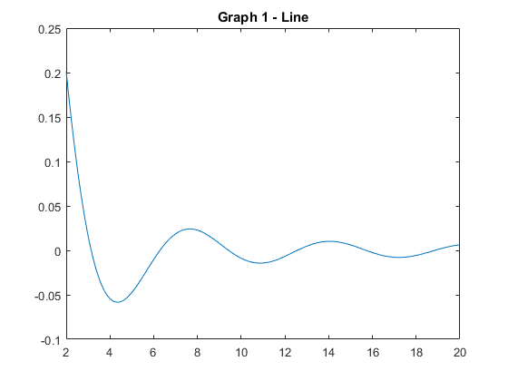
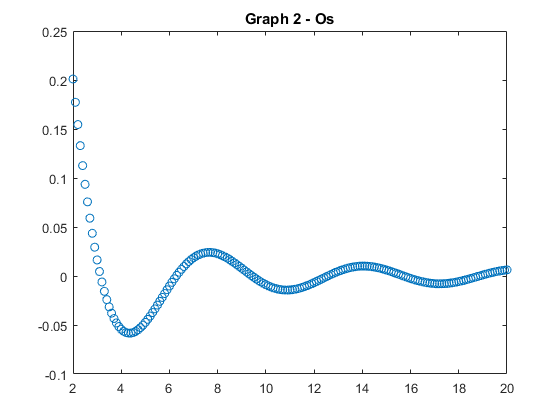
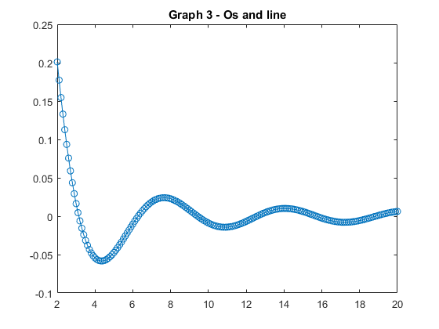
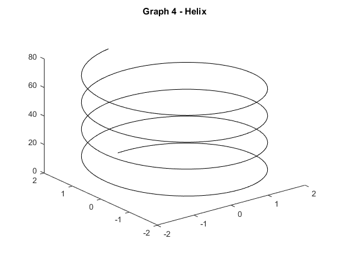
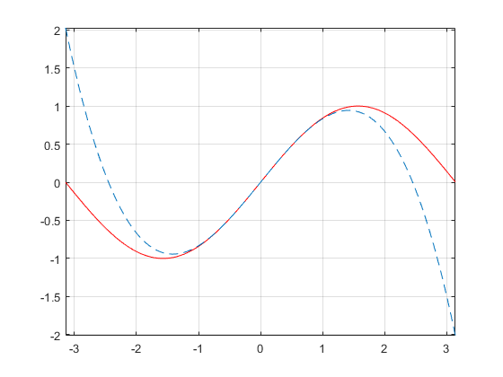
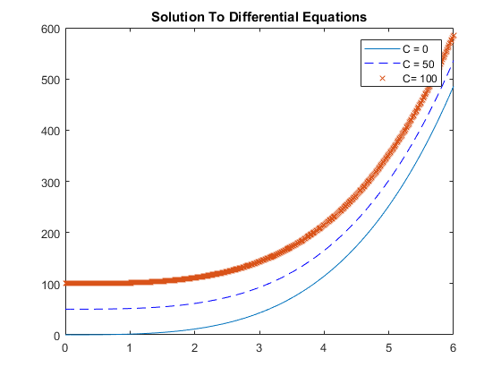

Lab 1 - Dean Styx - MAT 275
Contents
Exercise 1
% NOTE: Please suppress output--i.e., use a semicolon ';' at the end of any % commands for which the output is not necessary to answer the question. % Delete these notes before turning in. % Define input variable theta as discretized row vector (i.e., array). theta = [0, pi/6, pi/4, (pi)/2, (3*pi)/4, pi, (5*pi)/3]; % Define radius. r = 4; % Define x and y in terms of theta and r. x = r*cos(theta); y = r*sin(theta); % Check that x and y satisfy the equation of a circle. if r == sqrt(x.^2+y.^2) disp('true') else disp('false') end
true
Explain results here. Do x and y satisfy the equation of a circle? Why or why not? How does the vector output at the end confirm your answer? Notice I did not include text in the same line where the double-comment is. What this accomplishes is it does not add a title or create a new section in the table of contents when you publish. Using single % starting in the line after the %% turns the comments black as opposed to green. Yes it does, looking at it mathmatically, the equation makes it so we have a sin squared plus cosine squared which will equal one leaving the square root of x^2+y^2. and as we have learned before, x^2+y^2 = r^2. then the square root of r^2 is just r, proving the equation
Exercise 2
% Define t-vector. t = 2:0.1:20; % Define y-vector. y = exp(t/20).*sin(t)./(t.^2+1);
Part (a)
% Plot results (should have 3 plots total). figure; plot(t,y,'-') title('Graph 1 - Line')
Part (b)
% Plot results as data points only and as data points with line. figure; % creates a new figure window for next plot plot(t,y,'o'); title('Graph 2 - Os') figure; % creates another figure window plot(t,y,'o-'); title('Graph 3 - Os and line') 
Exercise 3
% Create t-vector (choose enough elements so that plot is smooth!) t = 0:0.1:25; % Define x,y,z components in terms of t. x = 2*sin(t); y = 2*cos(t); z = 3*t; % Plot resuls. figure; grid on; plot3(x,y,z, 'black'); title('Graph 4 - Helix')
Exercise 4
% Define input variable as vector. x = -pi:0.01:pi; % Define y and z. y = sin(x); z = x- (x.^3/6); % Plot results. figure; plot(x,y,'r',x,z,'--') axis tight; grid on;
Exercise 5
% NOTE: you must create the M-file ex5.m separately and invoke it here in % your main M-file (main file). % Print out the code for your created M-file (do NOT submit M-file % separately). type 'ex5.m' % Run your M-file--i.e., execute the M-file. run 'ex5.m'
x = 0:0.01:6 ; % define the vector x in the interval [0,5]
y1 = f(x, 0); % compute the solution with C = 0
y2 = f(x, 50); % compute the solution with C = 50
y3 = f(x,100); % compute the solution with C = 100
plot(x,y1, x,y2, '--b', x, y3, 'x') % plot the three solutions with different line-styles
title('Solution To Differential Equations') % add a title
legend('C = 0', 'C = 50', 'C= 100') % add a legend
function y = f(x,C)
y = x.^4/4+(2/3)*x.^3+x.^2/2+C; % fill-in with th e expression for the general solution
end
 Exercise 6
Part (a)
% Define f as anonymous function. f = @(x,y)(y.^2 + (x*exp(y))/(x.^2+1)); % Evaluate f at the given values of x and y f(-3,1)
ans =
0.1845
Part (b)
% Clear the function f out of the workspace. clear f % Print out f.m contents. type 'f.m' % Evaluate f at the given values of x and y f(-3,1)
function [ o ] = f( x, y )
o = x.^2+x.*exp(y)./(y+1);
end
ans =
4.9226